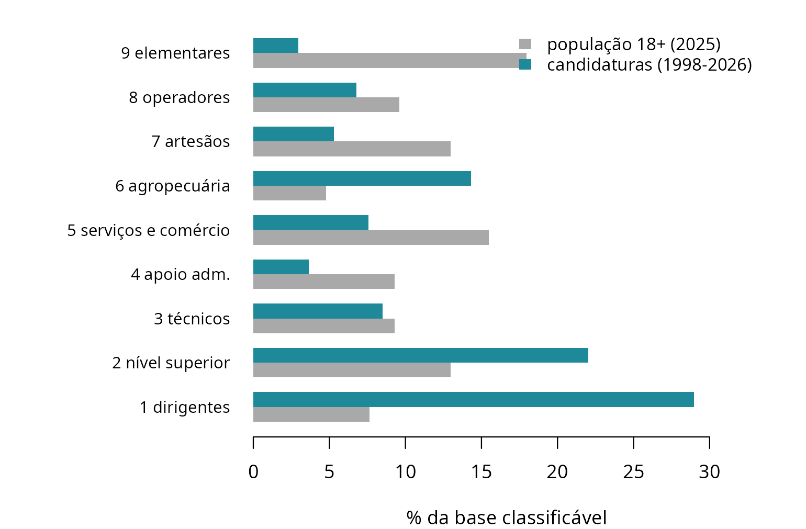

Comparar duas fontes: o que entra, o que sai, e quem fica de fora
Fonte:vignettes/articles/comparar-fontes.Rmd
comparar-fontes.RmdO índice de referência deste pacote promete uma coisa, na porta do IBGE: “a COD, usada na PNAD Contínua e no Censo, é quase a ISCO-08 com outro nome. É por aqui que se compara candidatura com população.” É a promessa mais forte que o pacote faz, e até agora era a única que ele não mostrava cumprindo — nem mostrava onde ela falha.
Esta página existe porque a promessa custou caro uma vez. Em setembro de 2026, uma comparação entre candidaturas do TSE e população da PNAD Contínua foi auditada e reprovada. Nada estava errado na tradução: as funções fizeram o que prometem, os testes passaram, os vetores tinham o comprimento certo. O erro estava numa decisão que o usuário toma sem perceber que a está tomando, e que o site do pacote não desaconselhava em lugar nenhum, porque em lugar nenhum tratava do assunto.
A decisão era a agregação. Ler o primeiro dígito da ISCO-88 dos dois lados parece a simplificação mais inocente possível. Não é: o grupo 1 do formulário do TSE está cheio de autorrótulo de empresário, e o da PNAD Contínua, de gerência assalariada. Mesmo rótulo, duas populações. A seção 7 mede a diferença.
Esta página é sobre as oito decisões desse tipo. Nenhuma delas tem resposta certa. Todas têm consequência, e a consequência é sempre a mesma coisa: um grupo de gente que sai da conta sem avisar.
O molde
Cada decisão recebe o mesmo bloco de quatro partes, nesta ordem: a decisão, o que ela permite, quem ela exclui e como medir o tamanho no seu dado. A repetição é de propósito. Você aprende o formato uma vez e lê as sete restantes sem reaprender nada.
Onde há recomendação, ela vem com a condição: se a sua pergunta é X, use A; se é Y, use B; e o preço de A é este. Nenhuma escolha é apresentada como óbvia.
Todos os números desta página são calculados na hora em que ela é construída, a partir dos dados que vêm instalados com o pacote. Nenhum foi digitado.
1. A porta
A decisão. Por qual das quatro portas o código entra: o cadastro de ocupações do TSE, a CBO-2002 (da RAIS, do CAGED e do eSocial), a CBO-94 ou a COD (da PNAD Contínua e do Censo).
O que ela permite. É a única decisão que a sua fonte toma por você. Você não escolhe a porta: escolhe o dado, e a porta vem junto.
Quem ela exclui. Na porta do TSE, os códigos que não designam ocupação nenhuma. Na porta da CBO, as famílias sem ISCO majoritário.
Como medir o tamanho no seu dado.
checa_cobertura(cod)na porta do TSE, e as irmãscheca_cobertura_cbo2002(),checa_cobertura_cbo94()echeca_cobertura_cod()nas outras três.
sem_isco <- sum(is.na(tse_isco$isco88))
empates <- sum(cbo2002_familia_isco88$empate)
c(codigos_tse = nrow(tse_isco), sem_isco = sem_isco,
ocupacoes_cbo = nrow(cbo2002_isco88), familias_com_empate = empates)
#> codigos_tse sem_isco ocupacoes_cbo familias_com_empate
#> 275 17 1387 19São 17 códigos do TSE sem ISCO, e a ausência está certa:
999 OUTROS, 581 DONA DE CASA,
296 SERVIDOR PÚBLICO ESTADUAL não nomeiam ocupação, e
inventar um endereço para eles seria pior do que não ter nenhum. A seção
3 volta a esses códigos, porque é sobre eles que quase todas as decisões
seguintes se decidem.
O ponto que quase ninguém percebe: a granularidade não é
escolha sua, é do instrumento. O cadastro do TSE tem 275
códigos; a tábua da CBO-2002 cobre 1.387 ocupações. E não é só uma
questão de quantidade — é de resolução. A coluna nivel de
tse_isco diz em que profundidade da ISCO-88 cada código
aterrissa:
n <- table(tse_isco$nivel, useNA = "no")
rbind(codigos = n, pct = round(100 * prop.table(n), 1))
#> 2 3 4
#> codigos 217.0 25.0 16.0
#> pct 84.1 9.7 6.2Cerca de 84% dos códigos traduzidos param no grande grupo de
dois dígitos. Quando você pede a ISCO-88 de uma candidatura, o
que volta é, na maioria das vezes, um código arredondado —
2400 e não 2411. Isso não é defeito do pacote:
é o que o formulário do TSE permite dizer. Mas tem uma consequência
prática imediata, e ela é o assunto da seção 7: quando você compara com
a PNAD Contínua, que classifica em quatro dígitos de verdade, os dois
lados não têm a mesma resolução, e agregar até o ponto em que eles se
encontram é uma decisão, não uma formalidade.
2. A revisão da ISCO
A decisão. ISCO-88 ou ISCO-08. São classificações diferentes, não a mesma renumerada, e os escores de uma não são comparáveis com os da outra.
O que ela permite. A ISCO-08 é o vocabulário da COD e do que se publica hoje; a ISCO-88 é onde mora o EGP, o prestígio de Treiman e a maior parte da literatura brasileira de estratificação.
Quem ela exclui. Ninguém — e é por isso que é pior. A revisão não tira gente da conta, desloca gente entre categorias, e o deslocamento não aparece em nenhuma taxa de cobertura.
Como medir o tamanho no seu dado. Traduzir pelas duas e cruzar:
table(substr(tse_para_isco(cod, ano), 1, 1), substr(tse_para_isco08(cod, ano), 1, 1)). O que estiver fora da diagonal mudou de grande grupo por causa da revisão.
amb <- table(isco88_isco08$n_alternativas > 1)
round(100 * prop.table(amb), 1)
#>
#> FALSE TRUE
#> 64.9 35.1Cerca de 35% dos códigos da ISCO-88 têm mais de um destino possível
na ISCO-08. A tábua escolhe um deles, e a escolha está declarada:
n_alternativas é uma coluna do dado, e
isco88_para_isco08(cod, com_ambiguidade = TRUE) devolve a
marca junto com a tradução. A ambiguidade foi preservada, não
resolvida no escuro.
Quem fica na ISCO-88 do começo ao fim pode ignorar isso. Quem atravessa, não — e o deslocamento tem um endereço preferido:
b <- isco88_isco08
b$g88 <- substr(b$isco88, 1, 1); b$g08 <- substr(b$isco08, 1, 1)
round(100 * mean(b$g88 != b$g08), 1) # % que troca de grande grupo
#> [1] 7.5
table(ISCO88 = b$g88, ISCO08 = b$g08)[c("3", "8"), c("2", "3")]
#> ISCO08
#> ISCO88 2 3
#> 3 11 79
#> 8 0 57,5% dos códigos trocam de grande grupo, e o maior fluxo isolado são os 11 que sobem do grupo 3, dos técnicos, para o grupo 2, dos profissionais de nível superior. Não é uma lista aleatória:
sob <- b[b$g88 == "3" & b$g08 == "2", ]
data.frame(isco88 = sob$isco88, isco08 = sob$isco08,
isei88 = isco88_para_isei(sob$isco88),
rotulo = isco88_medidas$rotulo[match(sob$isco88,
isco88_medidas$isco88)])
#> isco88 isco08 isei88 rotulo
#> 1 3213 2132 50 farming & forestry advisers
#> 2 3223 2265 51 dieticians & nutritionists
#> 3 3226 2264 60 physiotherapists etc associate professionals
#> 4 3300 2359 38 teaching associate professionals
#> 5 3310 2341 38 primary education teaching associate professionals
#> 6 3320 2342 38 pre-primary education teaching associate professionals
#> 7 3330 2352 38 special education teaching associate professionals
#> 8 3340 2359 38 other teaching associate professionals
#> 9 3472 2656 64 radio, television & other announcers
#> 10 3473 2652 50 street night-club etc musicians singers & dancers
#> 11 3474 2659 50 clowns magicians acrobats etc associate professionalsSão, em boa parte, professores de ensino fundamental e
pré-escolar. No Brasil isso é grande: a docência é onde se
concentra o emprego público, e isco_posicao_br mede que
67,5% de quem está no grupo 23 é empregado do setor público. Se você
contar “quantos profissionais de nível superior” pela ISCO-88 e comparar
com uma contagem feita pela ISCO-08, o professor primário está de um
lado e não do outro, e a diferença não aparece em nenhuma taxa de
cobertura.
E há uma armadilha maior, que não é da revisão e sim do dígito. O primeiro dígito é lido como se fosse uma escala, e ele não é:
ex <- c(enfermeiro = "2230", escriturário = "4110",
`técnico de enfermagem` = "3231")
data.frame(isco88 = unname(ex), grande_grupo = substr(ex, 1, 1),
isei88 = isco88_para_isei(ex), row.names = names(ex))
#> isco88 grande_grupo isei88
#> enfermeiro 2230 2 43
#> escriturário 4110 4 51
#> técnico de enfermagem 3231 3 38O enfermeiro está no grande grupo 2 e tem ISEI-88 43; o escriturário está no grupo 4, dois degraus abaixo na leitura ingênua do dígito, e tem 51. Duas réguas da mesma casa ordenam o mesmo par em sentidos opostos. Isso não é assimetria entre fontes — atinge os dois lados igualmente — mas é um defeito de validade do primeiro dígito, e a seção 7 mostra o que ele custa quando a agregação vira o eixo da comparação.
3. O ano
A decisão. Passar
ano =para as funções de tradução, ou não passar.O que ela permite. O cadastro de ocupações do TSE não é estável: sete códigos foram reaproveitados para ocupação diferente depois de 2002. Passar o ano é o que impede a série de misturar duas populações sob o mesmo número.
Quem ela exclui. Passando o ano, as candidaturas que usam um desses códigos no período errado voltam
NA. É pouca gente, e é a resposta certa. Não passando, não exclui ninguém e traduz errado em silêncio.Como medir o tamanho no seu dado.
checa_periodo(cod, ano).
r <- tse_quebra_2002[tse_quebra_2002$tipo == "reutilizado",
c("cod_tse", "rotulo_ate_2000", "rotulo_apos_2002",
"pct_superior_ate_2000", "pct_superior_apos_2002")]
r[order(r$cod_tse), ]
#> cod_tse rotulo_ate_2000
#> 13 158 DESENHISTA TÉCNICO
#> 25 211 PROCURADOR E ASSEMELHADOS
#> 5 214 DELEGADO DE POLICIA
#> 7 215 OCUPANTE DE CARGO DE DIRECAO E ASSESSORAMENTO SUPERIOR
#> 8 216 OFICIAIS DAS FORCAS ARMADAS E FORCAS AUXILIARES
#> 6 391 CHEFE INTERMEDIARIO
#> 9 521 GOVERNANTA DE HOTEL, CAMAREIRO, PORTEIRO, COZINHEIRO E GARCOM
#> rotulo_apos_2002 pct_superior_ate_2000
#> 13 TÉCNICO EM INFORMÁTICA 6.1
#> 25 ESTIVADOR, CARREGADOR E ASSEMELHADOS 90.5
#> 5 ESCULTOR E PINTOR 87.5
#> 7 ARTISTA PLÁSTICO E ASSEMELHADOS 15.4
#> 8 EMBALADOR, EMPACOTADOR E ASSEMELHADOS 67.2
#> 6 TAQUÍGRAFO E ESTENÓGRAFO 10.7
#> 9 GOVERNANTA 0.5
#> pct_superior_apos_2002
#> 13 18.1
#> 25 6.3
#> 5 2.3
#> 7 21.0
#> 8 2.1
#> 6 36.4
#> 9 2.8O código 214 era DELEGADO DE POLICIA até
2000 e passou a ser ESCULTOR E PINTOR. O 215
era ocupante de cargo de direção e virou artista plástico. Não são
refinamentos do rótulo: são ocupações sem relação nenhuma, e a coluna de
escolaridade mostra o tamanho do estrago — o 214 vai de
87,5% de ensino superior para 2,3%.
Veja o que o pacote responde com e sem o ano:
# a mesma candidatura de 2000, lida das duas maneiras
data.frame(
passou_o_ano = c("não", "sim"),
isco88 = c(suppressWarnings(tse_para_isco("214")),
suppressWarnings(tse_para_isco("214", ano = 2000))),
isei = c(suppressWarnings(tse_para_isei("214")),
suppressWarnings(tse_para_isei("214", ano = 2000))),
rotulo = c(suppressWarnings(tse_para_rotulo("214", ano = 2006)),
suppressWarnings(tse_para_rotulo("214", ano = 2000))))
#> passou_o_ano isco88 isei rotulo
#> 1 não 2452 54 ESCULTOR E PINTOR
#> 2 sim <NA> NA DELEGADO DE POLICIASem o ano, o dicionário devolve a leitura vigente — a do escultor — e
a aplica a um registro de 2000, quando o código queria dizer delegado de
polícia. A função não avisa, porque não tem como saber.
Com o ano, ela devolve NA, que é a resposta honesta: o
pacote não tem escore para o delegado sob esse código naquele período, e
dizer isso é melhor do que dizer o número errado.
Esta é a única decisão desta página em que uma das opções não tem defesa. As outras sete são escolhas legítimas com preços diferentes. Esta é passar o ano ou estar errado. Se a sua análise cobre 2002 ou algum ano anterior, passe o ano. Se cobre só 2004 em diante, passe o ano assim mesmo — custa um argumento e protege de uma extensão futura da janela.
4. A régua
A decisão. Uma medida contínua de status (ISEI, ISEI-BR, prestígio) ou um esquema categórico de classes (EGP, a classe de dez, o estrato).
O que ela permite. A contínua responde “quanto”; a categórica responde “qual”. Uma diferença de médias e uma tabela de composição não respondem à mesma pergunta e não se substituem.
Quem ela exclui. A contínua exclui os 17 rótulos que não são ocupação: eles voltam
NAe somem da conta. A categórica não exclui ninguém, mas transforma metade deles em categoria residual — e categoria residual não é estrato.Vínculo público não especificadoeFora da PEA por posiçãonão se somam às classes populares nem às altas, porque não são classes.Como medir o tamanho no seu dado.
table(tse_para_classe(cod, ano), is.na(tse_para_isei(cod, ano))).
res <- c("Vínculo público não especificado", "Fora da PEA por posição",
"Inativo com trajetória", "Não informado")
data.frame(classe = res,
codigos = sapply(res, function(k) sum(tse_isco$classe == k)),
com_isei = sapply(res, function(k)
sum(!is.na(suppressWarnings(
tse_para_isei(tse_isco$cod_tse[tse_isco$classe == k]))))),
row.names = NULL)
#> classe codigos com_isei
#> 1 Vínculo público não especificado 4 0
#> 2 Fora da PEA por posição 2 0
#> 3 Inativo com trajetória 6 0
#> 4 Não informado 4 0Nenhuma das quatro classes residuais tem escore, e não deveria ter. A
escolha entre as réguas é assunto de
vignette("qual-regua"), que não se repete aqui. O que
interessa nesta página é a consequência para a
comparação: as classes residuais existem só de um lado.
A PNAD Contínua não tem “vínculo público não especificado” nem “dona de
casa” como categorias de classe, porque ela pergunta a ocupação e a
posição em separado. Comparar uma classificação que tem categorias
residuais com uma que não tem é a armadilha da seção 5.
5. O universo
A decisão. Sobre que denominador a proporção é calculada: a base cheia, a base classificável, os ocupados, ou a população em idade elegível.
O que ela permite. Tudo. Nenhuma proporção significa nada sem ele.
Quem ela exclui. Depende do denominador — e é exatamente esse o ponto.
Como medir o tamanho no seu dado.
tse_universodo lado das candidaturas,cod_populacao_brdo lado da população. As duas tabelas fecham em 100% dentro de cada recorte, de propósito: o universo está declarado no próprio objeto.
Esta é a decisão que mais move o resultado, e é a que menos gente percebe estar tomando. Veja por quê:
u <- tse_universo[tse_universo$ano == 2024 & tse_universo$sexo == "Todos", ]
cob_tse <- u$pct[u$rubrica == "Com escore"]
p <- cod_populacao_br[cod_populacao_br$piso == 18 &
cod_populacao_br$sexo == "Todos", ]
p$isei <- suppressWarnings(isco88_para_isei(p$isco88))
cob_pop <- sum(p$pct[!is.na(p$isei)])
c(cobertura_do_ISEI_nas_candidaturas_2024 = cob_tse,
cobertura_do_ISEI_na_populacao_18mais = round(cob_pop, 1))
#> cobertura_do_ISEI_nas_candidaturas_2024 cobertura_do_ISEI_na_populacao_18mais
#> 62.04 61.80As duas fontes perdem quase a mesma fração de gente — e por motivos que não têm nada em comum. A população perde porque 38,0% dos adultos não estão ocupados e não têm ocupação para traduzir. O Tribunal perde porque um em cada cinco candidatos marca uma rubrica que não nomeia ocupação:
u[order(-u$pct), c("rubrica", "n", "pct")]
#> rubrica n pct
#> 288 Com escore 287624 62.04
#> 293 Outros (999) 101443 21.88
#> 294 Vínculo público 37329 8.05
#> 290 Inativo com trajetória 20003 4.31
#> 289 Fora da força de trabalho 17088 3.69
#> 292 Ocupação sem escore 96 0.02
#> 291 Não informada 0 0.00A coincidência dos dois números é acidente aritmético, e é útil justamente por isso: ela mostra que uma taxa de cobertura parecida não é sinal de que os dois lados são comparáveis. Aqui os dois lados perdem 38% da gente, e as duas perdas são de pessoas completamente diferentes.
E o denominador da população não é um só. Depende do piso etário, que a Constituição fixa em quatro valores diferentes conforme o cargo:
q <- cod_populacao_br[cod_populacao_br$situacao == "Não ocupado", ]
xtabs(pct ~ piso + sexo, q)
#> sexo
#> piso Homem Mulher Todos
#> 18 27.020 48.143 38.008
#> 21 25.964 47.689 37.304
#> 30 27.779 49.878 39.439
#> 35 30.296 52.291 41.973Quem compara candidatos ao Senado — piso de 35 anos — com “a população” sem escolher o piso erra o denominador em quatro pontos. E a diferença entre os sexos, dentro de qualquer piso, passa de vinte.
A recomendação, com a condição. Se a sua pergunta é sobre recrutamento — quem entra na disputa —, o denominador é a população em idade elegível para o cargo, e a fração não ocupada é parte do resultado, não um problema a descartar. Se a sua pergunta é sobre composição ocupacional — entre os que têm ocupação, quais —, o denominador é a base classificável dos dois lados, e aí você precisa declarar a cobertura de cada um, porque elas diferem por sexo. Trocar o denominador no meio do texto, sem dizer, troca o resultado sem avisar.
6. O resíduo
A decisão. O que fazer com quem não tem escore: descartar, nomear como categoria, ou recuperar do passado da própria pessoa.
O que ela permite. Descartar dá uma medida limpa sobre uma base menor. Nomear preserva o universo. Recuperar aumenta a cobertura sem inventar dado.
Quem ela exclui. Descartar apaga desproporcionalmente mulheres, pela linha do fora da força de trabalho. Nomear não apaga ninguém, mas custa uma categoria que não existe do outro lado.
isei_retrospectivo()recupera parte e a documentação diz quanto — não resolve, reduz.Como medir o tamanho no seu dado.
tse_universo, recortado por sexo.
d <- tse_universo[tse_universo$ano >= 2004 & tse_universo$sexo != "Todos", ]
tot <- tapply(d$n, d$sexo, sum)
by_r <- tapply(d$n, list(d$rubrica, d$sexo), sum)
round(100 * sweep(by_r, 2, tot, "/"), 1)
#> Homem Mulher
#> Com escore 69.2 53.3
#> Fora da força de trabalho 1.2 14.6
#> Inativo com trajetória 3.9 3.7
#> Não informada 0.5 0.4
#> Ocupação sem escore 0.1 0.0
#> Outros (999) 16.4 18.7
#> Vínculo público 8.6 9.3De 2004 em diante, Fora da força de trabalho é 1,2% das
candidaturas de homens e 14,6% das de mulheres. A diferença de cobertura
entre os sexos está quase toda nessa linha, e ela tem nome: são as donas
de casa, o código 581. Descartar o resíduo não é uma
operação neutra sobre ruído — é apagar um grupo específico,
majoritariamente feminino, cuja posição declarada é informação e não
omissão.
Os três preços, sem recomendação:
| o que fazer | o que custa |
|---|---|
| descartar | a base encolhe de forma generificada; toda proporção passa a ser condicional a ter declarado ocupação, e isso precisa ir na legenda da figura |
| nomear | preserva o universo, mas cria categorias que não existem do outro lado da comparação; a figura ganha barras que não têm par |
| recuperar |
isei_retrospectivo() herda o escore do registro
anterior da própria pessoa, com marca de herança e defasagem; a
cobertura sobe, a defasagem mediana é de quatro anos, e quem nunca se
candidatou antes continua sem escore |
7. A agregação
A decisão. Em que resolução comparar: o primeiro dígito da ISCO, dois dígitos, ou um esquema publicado.
O que ela permite. Comparar de todo. As duas fontes não se encontram no código de quatro dígitos, porque a do TSE não tem quatro dígitos de verdade (seção 1).
Quem ela exclui. Ninguém — e é a armadilha. A agregação não apaga gente, funde gente diferente sob o mesmo rótulo, e o resultado parece perfeitamente comparável.
Como medir o tamanho no seu dado. Compare o ISEI dentro de cada categoria agregada, nos dois lados. Se as médias divergirem, o rótulo casou e a população não.
Esta é a decisão que originou esta página. Aqui está o diagnóstico,
feito com os dois agregados do pacote — tse_validacao do
lado das candidaturas, cod_populacao_br do lado da
população:
v <- tse_validacao
v$isco <- suppressWarnings(tse_para_isco(v$cod_tse))
v$isei <- suppressWarnings(tse_para_isei(v$cod_tse))
v <- v[!is.na(v$isei), ]; v$g <- substr(v$isco, 1, 1)
o <- cod_populacao_br[cod_populacao_br$piso == 18 &
cod_populacao_br$sexo == "Todos" &
cod_populacao_br$situacao == "Ocupado", ]
o$isei <- suppressWarnings(isco88_para_isei(o$isco88))
o <- o[!is.na(o$isei), ]; o$g <- substr(o$isco88, 1, 1)
wm <- function(x, w) sum(x * w) / sum(w)
g <- sort(unique(c(v$g, o$g)))
cmp <- data.frame(
grupo = g,
isei_tse = sapply(g, function(k) wm(v$isei[v$g == k], v$n[v$g == k])),
isei_pop = sapply(g, function(k) wm(o$isei[o$g == k], o$pop[o$g == k])),
top_tse = sapply(g, function(k)
100 * sum(v$n[v$g == k & v$isei >= 70]) / sum(v$n[v$g == k])),
top_pop = sapply(g, function(k)
100 * sum(o$pop[o$g == k & o$isei >= 70]) / sum(o$pop[o$g == k])))
cmp$dif <- cmp$isei_tse - cmp$isei_pop
round(cmp[, -1], 1)
#> isei_tse isei_pop top_tse top_pop dif
#> 1 59.6 56.9 25.4 6.9 2.8
#> 2 71.0 68.9 28.7 39.2 2.1
#> 3 52.2 50.7 0.0 0.0 1.5
#> 4 45.3 46.3 0.0 0.0 -1.0
#> 5 42.3 35.2 0.0 0.0 7.1
#> 6 23.0 23.3 0.0 0.0 -0.3
#> 7 32.6 32.0 0.0 0.0 0.6
#> 8 31.8 30.5 0.0 0.0 1.3
#> 9 17.6 20.2 0.0 0.0 -2.6Olhe primeiro a coluna dif, e depois as duas colunas do
topo da escala. Elas contam histórias diferentes, e é aí que está a
lição.
Pela média, quase tudo casa: 5 dos 9 grandes grupos ficam a menos de dois pontos de ISEI um do outro, e o grupo 1, dos dirigentes, fica a 2,8. Se você parasse aqui, concluiria que o primeiro dígito agrega as mesmas pessoas dos dois lados.
Pela forma, o grupo 1 não é a mesma coisa nem de longe: 25,4% das candidaturas dele estão no topo da escala (ISEI 70 ou mais) contra 6,9% da população. O dígito 1 do formulário do TSE é povoado por autorrótulo de empresário e proprietário — a pessoa escreve o que ela é, não o cargo que ocupa. O da PNAD Contínua é povoado por gerência assalariada de estabelecimento pequeno. Mesmo rótulo, duas populações, e a média não denuncia porque as duas misturas por acaso têm centros parecidos.
O grupo 2 mostra o mesmo mecanismo com o sinal invertido, e vale reparar: 39,2% da população desse grupo está no topo contra 28,7% das candidaturas. A “elite profissional” do formulário do TSE é mais baixa que a da população, não mais alta.
O grupo 5, de serviços e comércio, é o que mais diverge na média — 7,1 pontos — e a razão é o policiamento, que a seção 8 explica.
O ponto didático, e ele generaliza. Quando você agrega para comparar, compare as distribuições dentro de cada categoria, e não só as médias. Uma média que casa é evidência fraca; uma cauda que não casa é evidência forte de que o rótulo casou e a população não. Se a sua categoria agregada tem composições internas diferentes nas duas fontes, ela é um nome, não um objeto — e qualquer diferença que você mostrar entre as fontes nessa categoria é, em parte, do instrumento.
8. A ponte entre duas fontes
A decisão. Ler o código da COD direto, ou passar por
cod_para_isco().O que ela permite. Passar pelo pacote alinha os dois lados num ponto em que eles genuinamente se encontram.
Quem ela exclui. Ninguém — mas ler a COD direto move o policial militar de grande grupo em um dos lados e não no outro.
Como medir o tamanho no seu dado.
table(substr(V4010, 1, 1), substr(cod_para_isco(V4010), 1, 1))sobre o seu microdado da PNAD Contínua.
O que o pacote faz por você sem você pedir. A COD do
IBGE aloca oficiais e praças da polícia militar e do corpo de bombeiros
militar ao grande grupo 0, o das forças armadas. A
ISCO-08 não faz isso: para ela, policiamento é serviço protetivo, grupo
5. É uma adaptação brasileira legítima da classificação, e
cod_para_isco() a desfaz:
cod <- c(`forças armadas` = "0110", `polícia militar` = "0411",
`bombeiro militar` = "0511")
data.frame(cod = unname(cod),
isco08 = cod_para_isco08(cod),
isco88 = cod_para_isco(cod),
row.names = names(cod))
#> cod isco08 isco88
#> forças armadas 0110 0110 0110
#> polícia militar 0411 5412 5162
#> bombeiro militar 0511 5411 5161E é para lá que os códigos do TSE aterrissam:
tse <- c("145", "232", "233", "258")
data.frame(cod_tse = tse,
rotulo = tse_para_rotulo(tse, ano = rep(2024, length(tse))),
isco88 = tse_para_isco(tse, ano = rep(2024, length(tse))))
#> cod_tse rotulo isco88
#> 1 145 BOMBEIRO CIVIL 5162
#> 2 232 POLICIAL CIVIL 5162
#> 3 233 POLICIAL MILITAR 5162
#> 4 258 BOMBEIRO MILITAR 5162Os dois lados aterrissam no mesmo grande grupo — desde que você passe pelo pacote. Quem ler o primeiro dígito da COD em vez de traduzir põe o policial militar da população no grupo 0 e o candidato policial militar no grupo 5, e a figura mostra uma diferença que é do instrumento, não do país.
No código de quatro dígitos os dois lados ainda diferem, e convém
saber: a COD separa bombeiro (5161) de policial
(5162), e o cadastro do TSE manda os quatro rótulos para
5162. Se a sua comparação desce a quatro dígitos, agregue
5161 e 5162 dos dois lados antes de
comparar.
O que o pacote não faz. A posição na ocupação, que não é atributo do código. E, quando você a traz da PNAD Contínua, ela discorda do código sobre quem é militar:
i <- isco_posicao_br
i[i$isco88 %in% c("0110", "5161", "5162"),
c("isco88", "n_pessoas", "pct_militar", "pct_setor_publico")]
#> isco88 n_pessoas pct_militar pct_setor_publico
#> 1 0110 1420 100.0 0.0
#> 173 5161 570 61.9 5.4
#> 174 5162 2483 71.6 28.4O dicionário do IBGE define a posição militar como
“militar do exército, da marinha, da aeronáutica, da polícia
militar ou do corpo de bombeiros militar”. Por isso 71,6% de
quem está no endereço 5162 — polícia — declara posição
militar. Duas perguntas do mesmo questionário, duas respostas, e
nenhuma das duas é o erro da outra. Escolha qual delas
responde à sua pergunta, e diga qual escolheu.
9. O que o pacote não faz
Sem eufemismo, com a razão de cada uma e o que fazer no lugar.
Não tem esquema de classes para a COD.
tse_para_classe() existe e cod_para_classe()
não. O motivo não é preguiça: metade das categorias do esquema de dez
classes são rubricas do formulário do TSE —
Vínculo público não especificado,
Fora da PEA por posição,
Inativo com trajetória — e não posições da ISCO. Elas não
têm equivalente na PNAD Contínua, porque lá vínculo e ocupação são
perguntas separadas. Consequência direta: o esquema de dez
classes não atravessa para a população, e quem precisa comparar
composição de classe entre as duas fontes não tem régua pronta.
O que fazer: comparar pelo ISEI, que é literalmente o mesmo construto
dos dois lados, ou construir a sua própria régua declarando as
categorias que só existem de um lado.
Não sabe a posição na ocupação a partir do código.
Daí o EGP sair degradado (?tse_para_egp), e daí
isco_posicao_br ser um prior de população e nunca
uma imputação individual. O que fazer: usá-la para análise de
sensibilidade — rodar com e sem a posição provável e ver se a conclusão
se move.
Não fecha o EGP nem com a PNAD Contínua, porque falta a supervisão sobre assalariados, que é o que define a classe V. Nenhuma das quatro portas a tem.
Não sabe quem é servidor público entre as candidaturas, além de quem escolheu o rótulo. E a diferença entre as duas coisas é grande:
# `tse_validacao` cobre a serie inteira, entao o rotulo tambem tem de cobrir:
# comparar 2024 com 1998-2026 seria comparar duas bases diferentes
us <- tse_universo[tse_universo$sexo == "Todos", ]
rotulo <- 100 * sum(us$n[us$rubrica == "Vínculo público"]) / sum(us$n)
# aplicando a taxa de setor publico por endereco da ISCO as candidaturas que
# DECLARAM ocupacao — o que a PNAD Continua mede e o TSE nao pergunta
v2 <- tse_validacao
v2$isco <- suppressWarnings(tse_para_isco(v2$cod_tse))
v2 <- v2[!is.na(v2$isco), ]
v2$taxa <- isco_posicao_br$pct_setor_publico[match(v2$isco, isco_posicao_br$isco88)]
v2$taxa[is.na(v2$taxa)] <-
isco_posicao_br$pct_setor_publico_grupo[
match(substr(v2$isco[is.na(v2$taxa)], 1, 2), isco_posicao_br$grupo)]
estimado <- sum(v2$n * v2$taxa, na.rm = TRUE) / sum(v2$n[!is.na(v2$taxa)])
c(escolheram_o_rotulo = round(rotulo, 1),
estimado_entre_quem_declara = round(estimado, 1))
#> escolheram_o_rotulo estimado_entre_quem_declara
#> 8.7 20.4Os dois números medem coisas diferentes e a distância entre eles é o tamanho do que não se sabe. A conta da direita é uma estimativa, não uma imputação: ela aplica ao candidato a taxa média da ocupação dele na população, e candidatos não são uma amostra da população da sua ocupação. Use-a como ordem de grandeza e não como variável.
Não deflaciona, não pondera e não faz desenho
amostral. A PNAD Contínua exige peso; o pacote devolve vetor.
cod_populacao_br já vem ponderada, mas dá o ponto e não a
incerteza — se você precisa de erro-padrão, o caminho é o microdado com
o pacote survey.
10. A folha de decisão
As oito, numa página. Nada aqui que não esteja desenvolvido acima.
| # | a decisão | as opções | quem isso exclui |
|---|---|---|---|
| 1 | a porta | TSE, CBO-2002, CBO-94, COD | os 17 códigos do TSE sem ocupação; as 19 famílias da CBO sem ISCO majoritário |
| 2 | a revisão | ISCO-88, ISCO-08 | ninguém — desloca em vez de excluir, e não aparece na cobertura |
| 3 | o ano | passar ano =, não passar |
passando, as candidaturas dos 7 códigos reutilizados fora de vigência; não passando, ninguém, e a tradução fica errada |
| 4 | a régua | contínua, categórica | a contínua, os 17 rótulos sem ocupação; a categórica, ninguém — mas cria residuais que não são estratos |
| 5 | o universo | base cheia, classificável, ocupados, idade elegível | quem não tem escore de cada lado: 38,0% das candidaturas de 2024, 38,2% da população de 18 anos ou mais |
| 6 | o resíduo | descartar, nomear, recuperar | descartar apaga 14,6% das candidatas contra 1,2% dos candidatos |
| 7 | a agregação | 1 dígito, 2 dígitos, esquema publicado | ninguém — funde populações diferentes sob o mesmo rótulo; no grupo 1, 25,4% no topo da escala contra 6,9% |
| 8 | a ponte |
cod_para_isco(), ler a COD direto |
ninguém — mas lendo direto, o policial militar troca de grande grupo em um dos lados só |
O exemplo trabalhado
Uma comparação completa, de ponta a ponta, com o universo declarado,
o resíduo nomeado e a agregação justificada. Tudo abaixo roda com
library(ocupacoesBR) e nada mais.
A pergunta. Entre quem tem ocupação declarada, as candidaturas brasileiras e a população em idade elegível se distribuem igual pelos grandes grupos da ISCO-88?
As decisões, declaradas. Porta: TSE de um lado, COD
do outro (1). Revisão: ISCO-88, porque é onde mora o ISEI (2). Ano:
passado, e é o que tse_validacao já faz ao agregar (3).
Régua: o grande grupo para a composição, o ISEI para auditar a agregação
(4 e 7). Universo: a base classificável dos dois lados, com a cobertura
reportada junto (5). Resíduo: descartado, e o preço na Figura 2 (6).
Ponte: pelo pacote (8).
E uma nona decisão, que esta página não trata e você vai ter
de tomar: a janela de tempo. tse_validacao agrega
as candidaturas de 1998 a 2026; cod_populacao_br é a PNAD
Contínua de 2025. Os dois lados não cobrem o mesmo período, e isso é uma
limitação real deste exemplo, não um detalhe. Está declarada aqui porque
é o que o resto da página pede que se faça: nomear a decisão em vez de
deixá-la implícita. Quem precisar de correspondência temporal estrita
tem de descer ao microdado dos dois lados.
comp <- data.frame(
grupo = cmp$grupo,
tse = sapply(cmp$grupo, function(k) 100 * sum(v$n[v$g == k]) / sum(v$n)),
pop = sapply(cmp$grupo, function(k) 100 * sum(o$pop[o$g == k]) / sum(o$pop)))
comp$razao <- comp$tse / comp$pop
rot <- c("0 forças armadas", "1 dirigentes", "2 nível superior",
"3 técnicos", "4 apoio adm.", "5 serviços e comércio",
"6 agropecuária", "7 artesãos", "8 operadores", "9 elementares")
comp$rotulo <- rot[match(comp$grupo, as.character(0:9))]
round(comp[, c("tse", "pop", "razao")], 1)
#> tse pop razao
#> 1 29.0 7.6 3.8
#> 2 22.0 13.0 1.7
#> 3 8.5 9.3 0.9
#> 4 3.6 9.3 0.4
#> 5 7.6 15.5 0.5
#> 6 14.3 4.8 3.0
#> 7 5.3 13.0 0.4
#> 8 6.8 9.6 0.7
#> 9 3.0 18.0 0.2
op <- par(mar = c(4, 11, 1, 2))
m <- t(as.matrix(comp[, c("pop", "tse")]))
colnames(m) <- comp$rotulo
barplot(m, beside = TRUE, horiz = TRUE, las = 1, border = NA,
col = c(CINZA, VERDE), xlab = "% da base classificável",
cex.names = 0.85, xlim = c(0, max(m) * 1.15))
# no canto de cima: a barra mais longa e a do grupo 1, que fica embaixo
legend("topright", c("população 18+ (2025)", "candidaturas (1998-2026)"),
fill = c(CINZA, VERDE), border = NA, bty = "n", cex = 0.9)
Composição ocupacional das candidaturas de 1998 a 2026 e da população de 18 anos ou mais em 2025, pelos grandes grupos da ISCO-88. Base classificável dos dois lados: as candidaturas sem ocupação declarada e a população não ocupada estão fora, e a Figura 2 mede o tamanho do que ficou de fora.
par(op)O grupo 1 é 3,8 vezes mais frequente entre candidaturas do que na população, e o grupo 9, das ocupações elementares, é 6,1 vezes menos. Mas a seção 7 já avisou: o grupo 1 não é a mesma população dos dois lados, e a razão de 3,8 mistura uma diferença real de recrutamento com uma diferença de instrumento.
O grupo 9 não está livre do problema — o ISEI médio dos dois lados difere em 2,6 pontos —, mas ali as caudas casam (nenhum dos dois lados tem gente no topo da escala) e a fusão é mais branda. A leitura defensável desta figura é a direção e a ordem de grandeza, não a razão exata, e ela é mais segura na base da escala do que no topo. É por isso que a Figura 1 não pode ser lida sozinha.
uh <- tse_universo[tse_universo$sexo != "Todos", ]
tot <- tapply(uh$n, uh$sexo, sum)
cs <- uh[uh$rubrica == "Com escore", ]
fora_tse <- 100 - 100 * tapply(cs$n, cs$sexo, sum) / tot
ph <- cod_populacao_br[cod_populacao_br$piso == 18, ]
ph$isei <- suppressWarnings(isco88_para_isei(ph$isco88))
fora_pop <- sapply(c("Homem", "Mulher"), function(k)
100 - sum(ph$pct[ph$sexo == k & !is.na(ph$isei)]))
op <- par(mar = c(4, 4, 1, 2))
b <- rbind(`candidaturas 1998-2026` = fora_tse[c("Homem", "Mulher")],
`população 18+ (2025)` = fora_pop)
x <- barplot(b, beside = TRUE, border = NA, col = c(VERDE, CINZA),
ylab = "% sem escore", ylim = c(0, 60))
text(x, b, pc(b), pos = 3, cex = 0.85, xpd = NA)
legend("topleft", rownames(b), fill = c(VERDE, CINZA), border = NA,
bty = "n", cex = 0.9)O que ficou de fora da Figura 1, de cada lado e por sexo. As duas fontes perdem frações parecidas de gente por razões sem nada em comum, e as duas perdem mais mulheres que homens — também por razões diferentes.
par(op)A Figura 2 é o que a Figura 1 esconde, e ela tem de andar junto. Do lado do Tribunal, a fração sem escore é maior entre as candidatas pela linha do fora da força de trabalho (seção 6): é declaração de posição, e some quando se descarta o resíduo. Do lado da população, a fração sem escore também é maior entre as mulheres, mas por outra razão inteiramente — a taxa de ocupação feminina. As duas assimetrias têm o mesmo sinal e causas diferentes, e uma análise que descarte o resíduo dos dois lados sem dizer isso apresenta como achado sobre recrutamento o que é, em parte, a soma de dois instrumentos.
A conclusão honesta deste exemplo é modesta, e é a que a medida sustenta: as candidaturas são muito mais concentradas nos grandes grupos altos da ISCO-88 do que a população em idade elegível, e o afastamento é mais seguro de afirmar na base da escala do que no topo; o tamanho da concentração no grupo 1 não é medível pelo primeiro dígito, porque ali o rótulo não casa população; e as duas bases classificáveis, ainda que de tamanho parecido, excluem gente diferente e de forma generificada nos dois lados.
Se você quer mais do que isso, a saída não é uma régua melhor. É declarar as oito decisões, dizer qual janela de tempo usou, e mostrar a Figura 2 ao lado da Figura 1.
As tabelas usadas aqui — tse_universo,
cod_populacao_br, isco_posicao_br,
tse_validacao — são dados do pacote, geradas por script a
partir dos microdados do TSE e da PNAD Contínua, que não viajam com o
pacote. Os scripts estão em data-raw/.